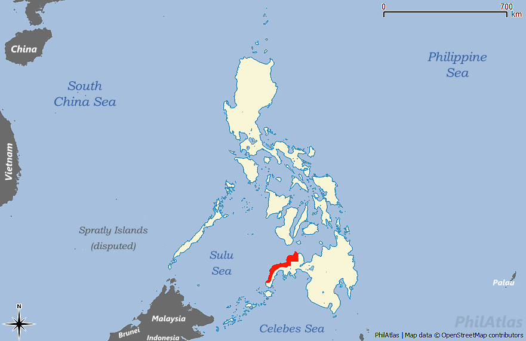

Zamboaga del Norte>ZIP code: 7100-7124.
capital and largest city:Dipolog.
Highest elevation(mount Dansalan).
IDD: area code:+63(0)65
Geography

Zamboanga del Norte, located in the northern part of the Zamboanga Peninsula in Mindanao, Philippines, boasts diverse topography comprising mountains, hills, plains, and a significant coastal area along the Moro Gulf. Dipolog City serves as the provincial capital, situated amidst the province's rich natural resources and productive agricultural lands. Notable geographical features include the Dipolog and Sindangan mountain ranges, the Dipolog River, and the Dapitan River. The province experiences a tropical climate with distinct wet and dry seasons. Its economy centers on agriculture, aquaculture, and forestry, while tourism is supported by attractions like Dakak Park and Beach Resort. With municipalities like Dapitan, Sindangan, and Liloy, Zamboanga del Norte continues to showcase its cultural, historical, and natural heritage.
History
Zamboanga del Norte's history is deeply rooted in the Philippines' broader historical context. Preceding Spanish colonization, indigenous communities thrived in the region with distinct cultures. During the Spanish era, efforts to control Mindanao led to settlements and missions in what is now Zamboanga del Norte, including the historically significant exile of Jose Rizal in Dapitan. American rule followed the Spanish-American War, and the province saw changes during Japanese occupation in World War II. Post-independence, Zamboanga del Norte continued to develop, contributing to the economic growth of the Zamboanga Peninsula. Today, it stands as a diverse and culturally rich province, with its history shaped by a blend of indigenous heritage, colonial influences, and contemporary progress.